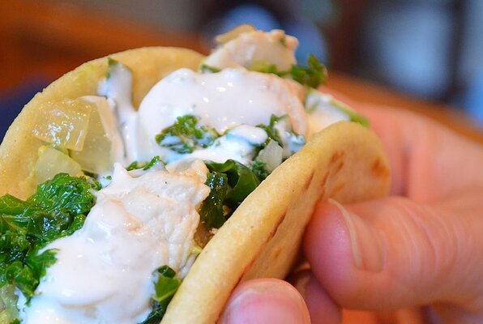

Chicken Tacos

Description
Sour cream and sauteed kale street tacos that your entire family will love.
Ingredients
- 1/2 cup sour cream
- 1/2 bunch fresh sorrel, chopped
- 1 lime, juiced
- 1 teaspoon salt
- 1 teaspoon white sugar
- 2 cups all-purpose flour
- 2 cups masa harina
- 2 teaspoons baking powder
- 2 teaspoons salt
- 1 3/4 cups water
- 2 ounces butter, melted
- 1/2 teaspoon vegetable oil
- 1/4 cup vegetable oil
- 1 cup cubed skinless, boneless chicken breast
- 1/2 bunch kale, stems removed, leaves coarsley chopped
- 1/2 onion, sliced
- 1 teaspoon salt
- 1 teaspoon ground black pepper
Steps
- Stir sour cream, sorrel, lime juice, 1 teaspoon salt, and sugar in a bowl
until well combined. Refrigerate until ready to use.
-
Mix flour, masa harina, baking powder, and 2 teaspoons salt in the bowl of a stand mixer.
Gradually pour butter and water into flour mixture while mixing at lowest speed;
mix until dough just starts to come together.
-
Turn dough out onto a clean, flat surface and knead 3 to 4 times. Separate dough
into 1 1/2 ounce balls, cover, and let rest for 1 hour.
-
Press each dough ball in a tortilla press lined with parchment paper or plastic wrap;
Transfer each tortilla to a baking sheet.
-
Lightly coat a cast-iron pan with 1/2 teaspoon vegetable oil and heat over medium-high heat.
Place a tortilla in the pan and cook until lightly golden, about 1 minute per side.
Repeat with remaining tortillas.
-
Heat 1/4 cup vegetable oil in a skillet over high heat. Stir in chicken; cook until browned around
the edges, 4 to 6 minutes. Stir in onion, kale, 1 teaspoon salt, and black pepper; redue heat to
medium high. Cook, stirring often, until kale is wilted, 3 to 5 minutes. Remove from heat.
-
Spoon chicken-kale mixture into each tortilla, top with sorrel sour cream, and serve.